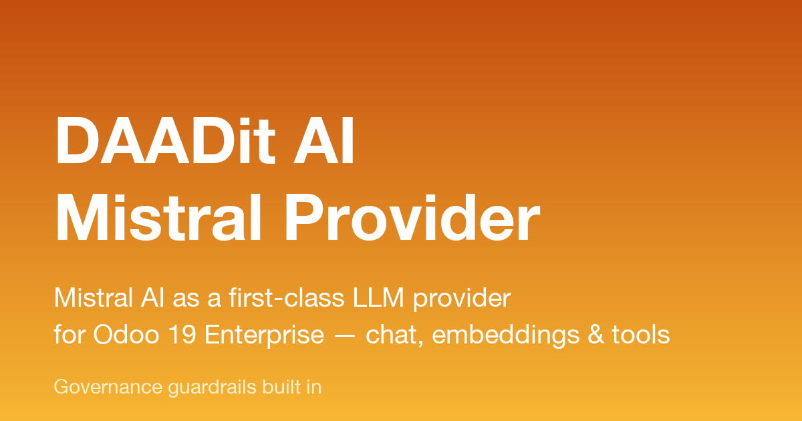

Mistral AI as a first-class LLM provider for Odoo 19 Enterprise
Odoo 19 Enterprise ships AI features wired to OpenAI and Google.
This module adds Mistral AI as a third provider with
feature parity: chat completions, embeddings (Sources / RAG) and
tool calling — so your AI agents can query and act on your Odoo data
through an EU-based model provider.
Features
- 7 chat models — Mistral Large, Medium, Small,
Codestral, Pixtral Large (vision), Ministral 8B and 3B, selectable
per AI agent.
- Embeddings —
mistral-embed powers
Odoo's Sources / RAG features end-to-end on Mistral.
- Tool calling — agents use Odoo's standard AI
topics/tools (search, aggregate, introspect) through Mistral's
function-calling API.
- Usage & cost tracking — every call is logged
with token counts per agent (Mistral Usage menu), with a
configurable daily spend cap per agent.
- Settings UI — a Mistral block in General
Settings → AI, next to the ChatGPT / Gemini blocks, including a
step-by-step "where do I get an API key" helper.
Guardrails built in
- Loop protection — hard cap of 10 LLM calls per
turn; hallucinated tool names are stopped after 2 attempts. Clear
user-facing message instead of a silent failure.
- Context protection — tool results are stripped of
binary fields and size-capped, so a broad query can't blow past
the model's context window.
- Rate-limit resilience — automatic backoff with
jitter on HTTP 429/5xx, honouring Mistral's
Retry-After.
- Data protection — per-agent model allow/block
lists, a PII field blocklist enforced on results and
filters, and a base-URL allowlist so the API key can only ever be
sent to Mistral.
Setup in three steps
- Create an API key at
console.mistral.ai.
- Enable Use your own Mistral AI account in General
Settings → AI and paste the key.
- Pick a Mistral model on any AI agent — done.
Requirements
- Odoo 19 Enterprise (depends on the standard
ai and ai_app modules).
- A Mistral AI account with billing enabled (a typical agent
conversation costs a few cents).
Mistral AI is a trademark of Mistral AI SAS. This module is an
independent integration by DAADit and is not affiliated with or
endorsed by Mistral AI.
Support
Questions or issues? Contact us via
daadit.group.